Card Sorting Case Study

Background
We have an Intranet that has been around for years and it was cobbled together by different people writing different parts. There are many problems with this site:
- Style: Page inconsistent, outdated
- Menu Categories: Unclear, hard to find target menu items, some are not categorized logically
- Pages: There are some modules that don't need to be used, and things that placed on the home page are not what users use frequently
- Modules: Some commonly used modules are hard to use and some modules are rarely used
However, due to various constraints, and there is not much budget/manpower to redesign a good intranet. Company intends to move things to Sharepoint (which is not solving the most rooted UX problems from my perspectives but anyways 👐)
What I can do
I hope to make the UX of the website as good as possible within the limited conditions. The most important and easier to improve, I think, is navigation. And navigation is the thing that user will use at the very beginning of landing the page. Therefore, I decided to rearrange all menu options.
At the beginning, I already had a prototype of navigation that I "thought" would be easier to use. But the PM has another way of orchestrating. After we absorbed each other's ideas, discussions and adjustments, we still couldn't find a solution that we were all satisfied with.
So we intend to use Open Cart Sorting to scientifically analyze it, and then come up with a relatively satisfactory result.
Goal
Use Open Cart Sorting to find out a better version for the Navigation
Role Specific
Designer (me) | Observer & Coordinator
Responsible for setting up the venue, observing participants, recording video and taking notes.
PM | Moderator & Observer
Responsible for briefing, explaining and guiding participants during the research process
Process
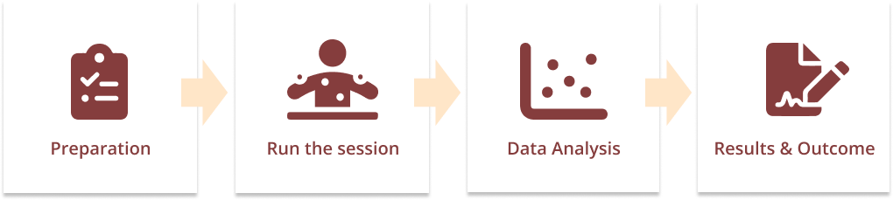
Preparation
Research Plan
Prepare all the materials to be used. I firstly write down the required information based on my own understanding, and then supplement it with PM, and then we discuss and revise. Results shows following, and including different elements in our research, namely Summary, Participants, Equipments, and Logistics.
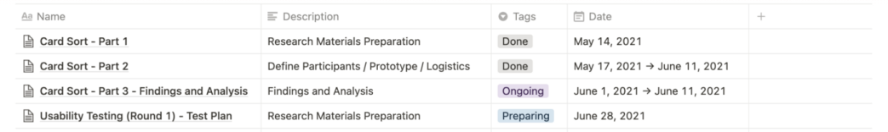Summary
Write down why we are using this research method and what you want to achieve.
The main purpose is to understand how users classify the existing menus, and whether the menu names are clearly expressed, etc.
Participants
Decide which colleagues to seek as our interviewees. Considering that some colleagues who have worked in the company for a long time may have a preconceived impression of the existing structure, we mainly find new colleagues as interviewees.
But we can't ignore the old colleagues, so we asked the admin who has been in the company for 7 years to do the Pilot test.
*The researchers/coordinators are me (designer) and PM.
Logistics
Write down why we are using this research method and what you want to achieve.
However, consider some real-world issues such as:
- If a group of two respondents is allowed to discuss, their answers may influence each other
- Two researchers may not be enough to control the group study (because one of us is responsible for interpreting and guiding, the other is responsible for taking notes and observing)
- A group of two may have timeouts or other unexpected problems to be solved
Equipments
Cards - This is the main character
It is not simply to write down each menu item on a card. Except for the default terms like Home page / setting, which can be written down, all others have to be re-interpreted.
Example No.1
We have some internal systems with special names. Those who are not using them for daily work might not know what the system is for when seeing the name. For example, there is an internal system called USS, the only thing we know is it might be an abbreviation but we don't know what it is related to. In this case, we have to re-write USS as “a system for sales department”. Or we can use its full name and with a description under it.
Example No.2
There are also some existing names that we think are vague, such as Knowledge Management. If we don't click on the page and read the content, we won't know what to manage. In fact, there are some regulations, work safety and other knowledge in it, so we changed it to “Knowledge Base” with a description following.
Digital cards or Physical cards?
At first we were thinking about using digital cards or physical cards, both have pros and cons.
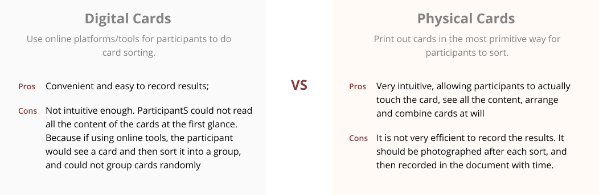We finally decided to use the most traditional way - Physical cards. Reasons for that are
- More fun to play
- Get rid of equipment issues
- Save more times for participants
Other Equipments
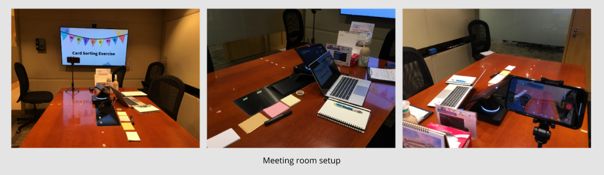
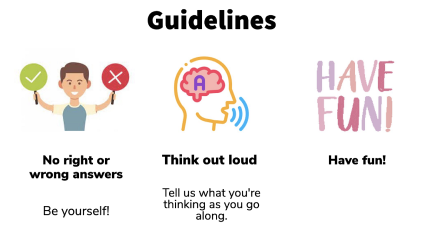
- Meeting Room: We only use one meeting room. If there are more observers, we will consider using two (one for participant and moderators, and the other for observers)
- Recording device: We use two recording devices, one standing still and the other moving holding on me. But I found that the moving one doesn't use at all 😂 (because I have to write notes and observations)
- Stationary: Notebooks, pens, markers
- Incentives: Small snacks as a reward for added fun
- Guidelines: Some rules like don't take this as a test; there are no right or wrong answers here, just be yourself; talk about what you think; enjoy the game
Run the Sessions
We will do 1 pilot test and 4 formal sessions. After each test, we will make some adjustments.
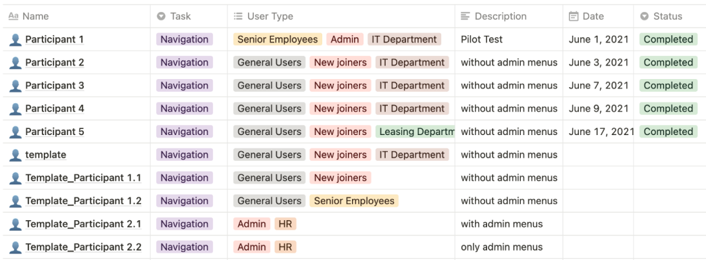 Remarks Since admin has more permissions, admin role can see more admin-related menu items. However, due to time issues and cross-department, this this time we only study the general role, which including those menu options that admin role also can view.
Pilot Test
The first participant was an admin in our IT department who has been with the company for 7 years. She should spend a little more time on the intranet on a daily basis than other colleagues.
Process
The moderator sat across from the participant, I didn't have to sit down because I need to record at the beginning. (However, I was taking notes and I didn't record it at the end. 😂) Participant's tasks to sort:
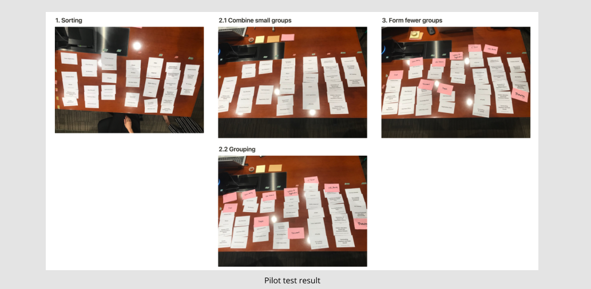
- Classify first, then divide them into groups
- Name the group, then explain the why you grouped and why it was named
- Groupsimilar types of groups again (the last time I think is a bit redundant, but anyway)
- Finally, let the participant ask us questions or give us some feedback. Also we answered their concerns.
I write down user feedback and observation during the process
- User Feedback
Includes which cards some participants think are difficult to sort, why they are sorted, what the participants think the cards represent, whether they are clear, etc.
- Interview Observations
Including I saw the participant put some cards together first, but then changed her mind, and the reasoning behind the speculation (you can ask each other questions in the last section of the interview, at this point, we can observe what we observe Questions are asked of the participants in an attempt to arrive at an answer)
Findings after the Pilot Test
- Pilot test found that the font size of the card needs to be larger so that it can be seen clearly when recording. Therefore the font of the card is adjusted.
- How to guide participant think loud? I found that Easterners are more introverted than Westerners, and they are not used to speaking out their thoughts when thinking, because talking to themselves can be a bit awkward. Conversely, Westerners speak when the atmosphere is quiet.
- I am worried that when I ask questions on the way, it will interfere with the participants and cut off their thoughts, so I just observe silently, not knowing how to guide them
- I decided to sit next to the participant and the moderator sitting across from the participant made them feel less stressed
- Ask questions in order? Or are they asking different questions/orders depending on the circumstances of different participants?
Other Sessions
After finishing the sessions of the next few participants, I found some more findings
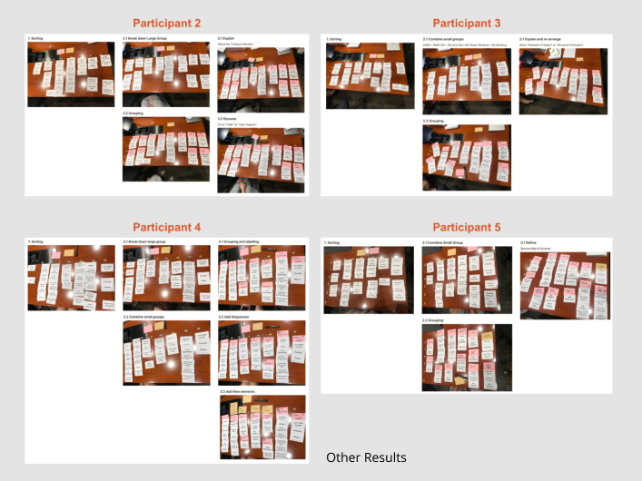
- Most of the participants will follow our ideas, but there will also be some participants with more assertive personalities who will add their own opinions. Of course, we are also welcome.
- There is a case where participants are checking/reviewing their own decisions when they explain why they want the cards grouped together or why they are named that way. At this time, they may change their minds, put some cards in other groups, or change the name of a certain group, or when moving cards to other groups at the same time because the content of the cards in the group has changed and the content of the cards in the group has changed. Change the group name. So there are several results showed on the right
Data Analysis
Data Entry
I use this Template (from boxes and arrows). Enter the data into this Excel, and there already are some corresponding formulas available for us to analyze, which is great.
Firstly, fill in all the card names according to the classification as a reference
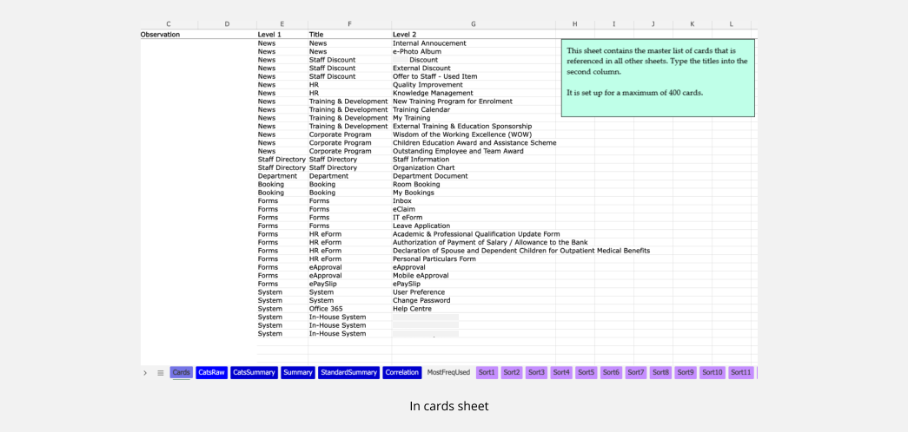
Enter 5 sets of data
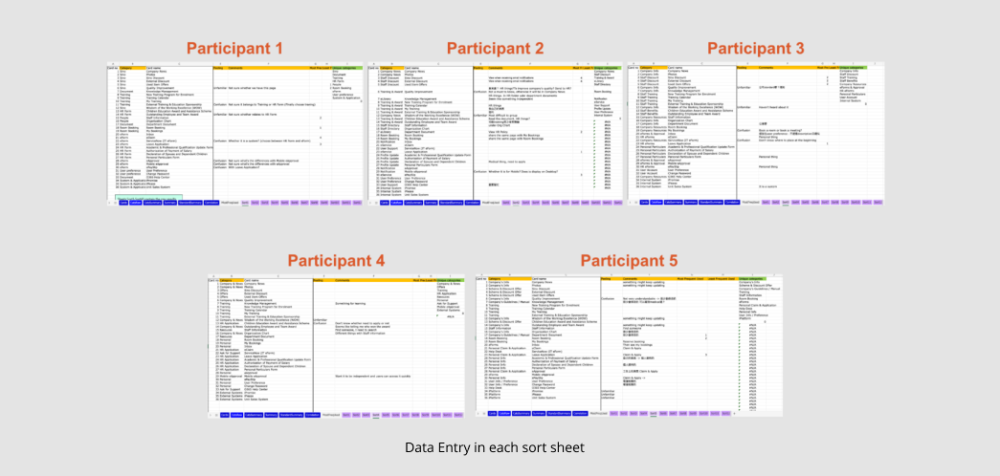- You can add some columns accordingly, for example: whether the user feels confused or unfamiliar about the name; which ones are the most commonly used and which ones are the least commonly used (add them for reference according to your own needs)
- Try to write down the corresponding comment as a reference
Evolve participants' original category names (menu labels) into standardised categories after discussion
- In the Original category column
Write down the category/label name that written by each participant
- In the Unique standardised category columnIn the Original category column
It will automatically calculate which names have the highest degree of uniformity. In other words, most people will agree to use this label
- In the Standardised category column
- Write the adjusted category name we discussed.
- We use the method of deleting wording and slightly changing wording to make adjustments. The adjusted name must be something that everyone thinks the user knows at a glance what type of item there will be under this category, so that they can easily find what they want
Example No.1
Participant 1/2/5 have the label Room booking, and we agree that Room booking can clearly express the described classification. Therefore, the label of Room booking has appeared 3 times, and the agreement is relatively high.
Example No.2
The User Preference of Participant 1 and Participant 2, the User account of Participant 3, the Personal of Participant 4, and the User Info / Preference of Participant 5 describe similar things, so We agreed to use System as the standardised category for these labels. Therefore, the uniformity of setting is also relatively high.
Data Analysis & Discussion
After the data is input, we start to analyze according to the results calculated by Excel, and discuss the menu classification version with a relatively high degree of agreement based on the results and analysis.
1. View the classification distribution of overall cards
We mainly decide what wording to use as the label of the classification group based on this table
- Summary is to see how all the cards are classified by participants. It is the original classification label written by the participants.
- The Standard Summary is similar to the Summary, but it shows the classification relationship between the Standard category and the card we discussed.
- We usually look at the Standard Summary table, because we will follow this classification label to make this design result.
2. View the correlation between the card and the label name
We mainly decide which Menu items are placed under the same category based on this table
- There are some where it is obvious that all respondents will be in the same group and it will show 100%
- It shows that 60% is that 3 of the 5 participants chose this card into this group, and the remaining 2 participants put the card in two different groups with 20%, or 40%. This card is placed in the same group, and so on
Discussion and observations
I had two discussions with the PM.
- For the first time, the more obvious groupings and the things that are easier to determine are decided first. Having said that, there are still some problems, so write it down and wait for the next stage to design a test to verify.
- The second will discuss some indiscriminate options and decide on a temporary version of the temporary solution. Some questions that we would like answers to will remain. Leave it to the next stage to design the test to verify
Result & Outcome
Finally, we discuss and design a new Information Architecture based on the entire research results.
Original Version
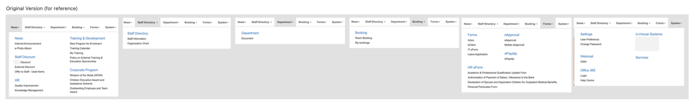
Updated Version
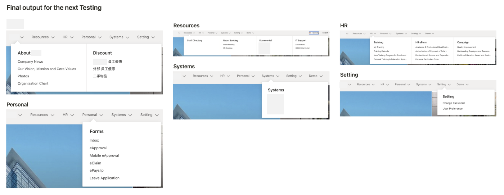
Overall improved points
- The menu distribution is more even, and there will not be too many items under one category
- Group items together logically by using 6 aspects of categories based on user's needs
- It was grouped by functions before
- New grouping is starting from a user's perspective, s/he might want to find something related to company information, resources provided, HR related documents, personal related actions, working system and settings.
Finally, we discuss and design a new Information Architecture based on the entire research results. But this menu is not the final result, we will also design a Usability Test based on this version to test whether the participants can easily and successfully find the item they want through this menu.
This Cart Sorting Exercise is finshed successfully, but the design and testing will not stop. Usability Test waiting to share with you next time. Stay tuned. Thank you for being here!